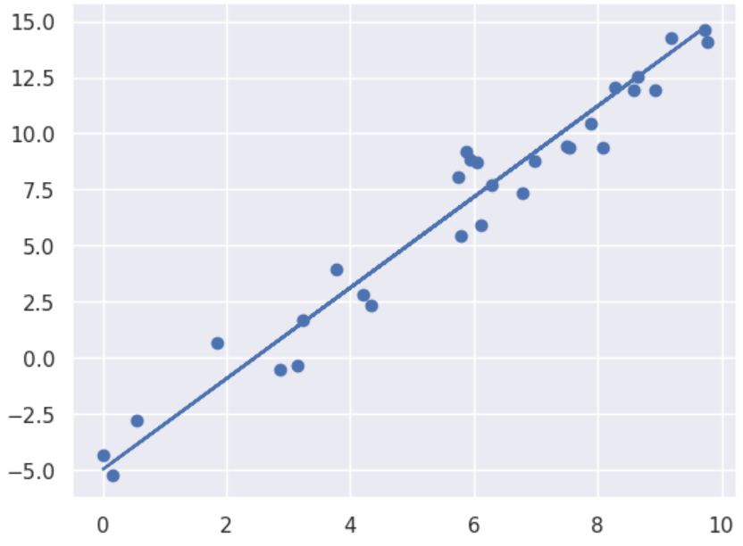

Welcome to the Intro to Data Analysis and Machine Learning eBook
Contents
Welcome to the Intro to Data Analysis and Machine Learning eBook¶
This is an eBook associated with the Data Analysis and Machine Learning section of the EMS506U course. The section is intended as a brief introduction to the principles and tools required for modern data analysis. We will work through from inspecting and cleaning data, to building simple models to explore relationships between variables, to building some modern neural networks for analysing images and sequences.
Pre-requisites¶
The course assumes that you have some basic level knowledge of Python – there will be extensive coverage of more complex code statements, but you should be comfortable with importing packages, declaring variables and writing basic loops. The eBook code is all executable in binder, using the launch button at the top of the page.
Contents¶

k-means and Gaussian Mixture Model Clustering
{kind=link}
Feature Engineering and Model Selection
{kind=link}
{kind=link}
{kind=link}